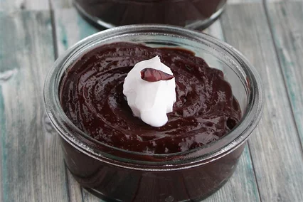

Almond Milk Chocolate Pudding

This is a super easy pudding that can be adapted as needed to be both vegetarian or vegan. It is low-fat and a responsible snack for those watching their diet but seeking a sweet chocolate dessert. A very versatile pudding recipe that is easy to modify. Can be eaten warm, if preferred.
Ingredients
- 1 cup white sugar, or to taste
- 1/2 cup unsweetened cocoa powder
- 1/2 cup cornstarch
- 1/4 tablespoon salt (optional)
- 3 cups unsweetened almond milk
- 1 teaspoon butter (optionsl)
- 1 teaspoon vanilla extract (optional)
Steps
- Mix sugar, cocoa powder, cornstarch, and salt together in a saucepan; whisk in 1/4 cup almond milk until foamy and smooth. Continue adding almond milk, 1/4 cup at a time, to cocoa mixture until mixture is smooth and foamy each time. Place saucepan over medium-high heat and cook, stirring constantly, until mixture comes to a simmer and starts to thicken, about 5 minutes.
- Remove saucepan from heat and stir in butter until melted and smooth. Add vanilla extract and mix well. Pour pudding into serving bowl and refrigerate until chilled, at least 30 minutes.